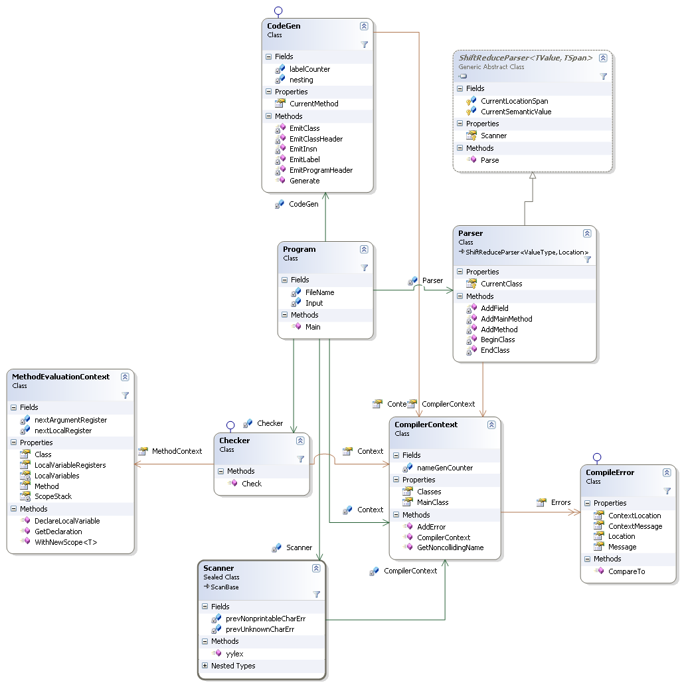
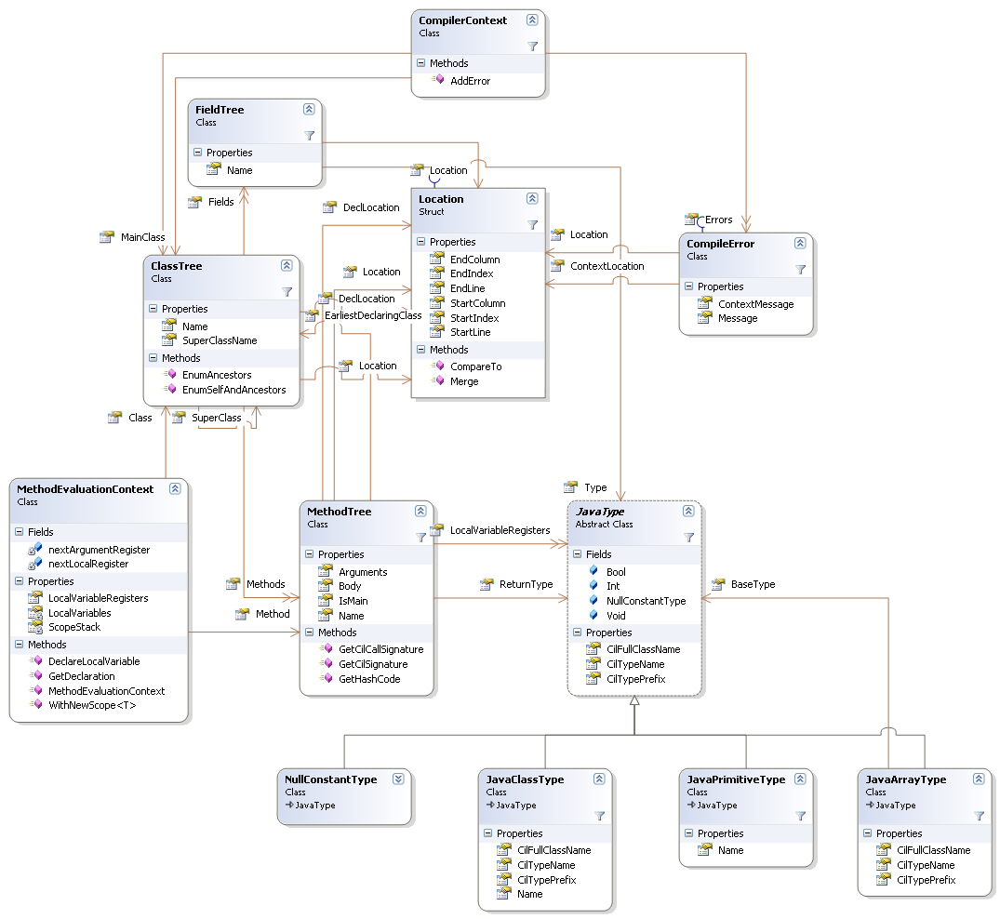
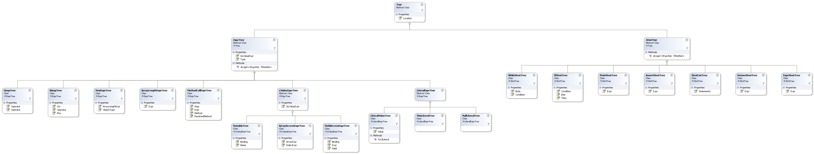

MiniJava compiler: Compilers Project Spring 2012 - Tuomas Tynkkynen
Introduction
MiniLang implements an compiler for the MiniJava programming language with a few additional features:
- The missing comparison operators '<=', '>=', '!=' and an unary '-' operator
- The null reference constant
- The '=' operator is an expression, not a statement
- The print statement can print other types as well, or print just a newline
- The main method can be located in any class, not just the first one in the file. Also, the class can contain other declarations besides the main method.
Usage
Building
Use Visual Studio to build the project. Use the build_parser.cmd script to rebuild the Scanner and Parser with gplex and gppg if you modify them.
For some stupid reason, the unit tests don't seem to work if the project is on the Linux network share in department machines, see
here.
Running
Run MiniJava <codefile.mj> to execute a file.
Run MiniJava without any arguments to see additional command line options.
Testing process
Majority of testing is done with Visual Studio unit tests, which are contained in the Tests subproject.
Code file test cases
The Tests\DriverTests folder contains some testcases as .mj files, as well as files with .out, and .err extensions.
The DriverTest test class compiles each .mj file, and attempts to run the final binary.
After executing, the standard output (where the 'println' statements print) and standard error (where the compile and runtime errors go) are compared with the .out and .err files.
Token language
Each of the Operator, Keyword and Punctuation have their own token types and productions in the gplex pattern definitions.
The 'Dim' token is required to keep the grammar LALR(1).
This is required to distinguish an array declaration (Foo[] foos;) and e.g. array assignment (Foo[bar] = baz;).
Without it, the parser would complain about a reduce/reduce conflict.
The following listing is a bit simplified from the actual rules, it does not contain the details of illegal character handling, or skipping comment contents.
Operator ::= "<=" | "<" | ">=' | ">' | "==" | "!=" |
"=" | "!" | "||" | "&&" |
"+" | "-" | "*" | "/" | "%" |
Punctuation ::= "," | ";" | "." |
"(" | ")" | "[" | "]" | "{" | "}"
Dim ::= "[" Whitespaceopt "]"
Keyword ::= "assert" | "boolean" | "class" | "extends" | "else" | "false" |
"if" | "int" | "length" | "main" | "new" | "null" | "out" |
"println" | "public" | "return" | "static" | "System" |
"this" | "true" | "void" | "while"
IntLiteral ::= [0-9]+
Identifier ::= [a-zA-Z_][a-zA-Z_0-9]*
Whitespace ::= [ \t\r\n\f\v]+
EolComment ::= "//" [^\n]* "\n"
CommentStart ::= "/*"
When a Comment token is found, the Comment state is entered, and only the following patterns are then considered.
Every CommentStart and CommentEnd token found in this state will respectively increment and decrement the comment nesting counter.
When the counter reaches zero, the lexer enters its regular state again.
The CommentContent tokens are simply ignored.
CommentContent ::= any string not containing "/*" or "*/"
CommentStart ::= "/*"
CommentEnd ::= "*/"
Grammar
The parser is generated by gppg. The grammar has one shift-reduce conflict, the classic 'dangling else' problem.
The default resolution gives the correct semantics.
Here, the terminal tokens are written in UpperCase, or one-character tokens like this: '+'.
program: class_decl*
;
class_decl: Class Identifier [ Extends Identifier ] '{' class_entry* '}'
;
class_entry: var_decl ';'
| method_decl
;
method_decl: Public type Identifier '(' opt_arg_decl_list ')' '{' opt_statement_list '}'
| Public Static Void Main '(' ')' '{' opt_statement_list '}'
;
type: basic_type [ DIM ]
;
basic_type: Int
| Boolean
| Void
| Identifier
;
opt_arg_decl_list: /* nothing */
| var_decl arg_decl_list_tail
;
arg_decl_list_tail: /* nothing */
| arg_decl_list_tail ',' var_decl
;
var_decl: type Identifier
;
opt_statement_list: /* nothing */
| opt_statement_list statement
;
statement: ';'
| If '(' expr ')' statement [ Else statement ]
| While '(' expr ')' statement
| '{' opt_statement_list '}'
| var_decl ';'
| Assert expr ';'
| System '.' Out '.' PrintLn '(' [ expr ] ')' ';'
| Return [ expr ] ';'
| expr ';'
;
expr: logical_or_expr
| logical_or_expr '=' expr
;
logical_or_expr: logical_and_expr
| logical_or_expr OR logical_and_expr
;
logical_and_expr: cmp_expr
| logical_and_expr AND cmp_expr
;
cmp_expr: rel_expr
| cmp_expr EQ rel_expr
| cmp_expr NE rel_expr
;
rel_expr: term_expr
| rel_expr '<' term_expr
| rel_expr '>' term_expr
| rel_expr LE term_expr
| rel_expr GE term_expr
;
term_expr: factor_expr
| term_expr '+' factor_expr
| term_expr '-' factor_expr
;
factor_expr: unary_expr
| factor_expr '*' unary_expr
| factor_expr '/' unary_expr
| factor_expr '%' unary_expr
;
unary_expr: dot_expr
| '-' unary_expr
| '!' unary_expr
;
dot_expr: dot_expr '.' Length
| dot_expr '.' Identifier
| dot_expr '.' Identifier '(' opt_call_arg_list ')'
| dot_expr '[' expr ']'
| object_expr
;
opt_call_arg_list: /* nothing */
| expr call_arg_list_tail
;
call_arg_list_tail: /* nothing */
| call_arg_list_tail ',' expr
;
object_expr: This
| Null
| True
| False
| New basic_type new_initializer
| IntLiteral
| Identifier
| '(' expr ')'
;
new_initializer: '(' ')'
| '[' expr ']'
;
Error handling strategies
Generic
The CompilerContext class has a list of CompileError objects, which represents the errors encountered
CompileError contains a diagnostic message, location of the error, and possibly an another location and message.
For example, if an already declared variable is redeclared, the CompileError will point to both the erroneous declaration and the original declaration.
Parse error recovery
The following cases have special handling in addition to causing an error message.
- An unrecognized or a non-ASCII character was found: just ignore the characters. In addition, additional diagnostics about this error are suppressed for the remaining of this line.
- Error while parsing a statement or expression: skip until next semicolon. This is done with an error rule in the gppg grammar.
- A duplicate class, field, method or local variable is found: rename it to some noncolliding name, and keep going.
Program code documentation
The MiniLang solution contains the following Visual Studio projects:
- Tests
- This project contains the unit tests for the compiler.
- MiniJava
- This project contains the core of the compiler.
In addition, the parser and the scanner are implemented with gppg and gplex. They are located in parser.y and scanner.l which are in the top level directory. If those files are modified, the build_parser.cmd script must be run to regenerate GeneratedParser.cs and Scanner.cs.
MiniJava core classes


- Location
- Represents a location in a source file. A location can span multiple characters and lines. Has associated starting and ending line and column numbers, as well as byte offsets into the file.
- JavaType
- An abstract class that represents a type reference in the MiniJava language. Its concrete subclasses are the following:
- JavaPrimitiveType: represents a primitive type: either int, boolean or void.
- JavaReferenceType: represents a reference type. Contains just a name of the class which this type represents.
- JavaArrayType: represents an array of some other type. Contains a reference to a JavaType instance of the base type.
- NullReferenceType: represents the type of the
null literal. This requires a special type, since the null value is assignable to any reference type.
- CompileError
- An class that represents an error that happened during compilation. Contains a location and a message about the error, and possibly an additional informational message and location
- CompilerContext
- Contains the symbol table for classes and a list of handled errors encountered during compilation.
- Binop, Unop
- In Operators.cs, enums that represent possible binary and unary operations.
- VariableBinding
- An abstract class that represents a binding of a name. For example, in a MiniJava program,
foo could refer to a local variable, a method argument or a field in the current class. Has concrete subclasses LocalVariableBinding, MethodArgumentBinding and FieldBinding.
Frontend classes
- Tokens
- An enum generated by gppg, in GeneratedParser.cs. Represents all the possible tokens in MiniJava. The semantic actions in scanner.l return values of this type.
- Scanner
- The scanner class generated by gplex, suitable for gppg-generated parser. Tokenizes the input file and performs location tracking via gplex'es built-in functionality.
- Parser
- In GeneratedParser.cs and ParserActions.cs, the parser class generated by gppg from parser.y, Parses the token stream generated by Scanner, and builds an AST.
Semantic checker classes
- Checker
- implements the ITreeVisitor interface, performs semantic checking by walking the AST and collecting the resulting errors to the CompilerContext. Also augments the AST by caching the expression types and binding variable, method and field references to respective declarations
- MethodEvaluationContext
- The semantic checking context for a method. Acts as a lexically scoped symbol table, and performs CLR register allocation of local variables.
Command line interface classes
- Program
- Implements the main program. Parses command line arguments, runs the phases and displays errors if necessary.
- ErrorDisplay
- Performs the nice formatting of error messages.
- ProcessUtils
- Contains utility methods for executing external processes such as ilasm, the CIL assembler.
- Usage
- Contains the usage help message.
Backend classes
- CodeGen
- Implements the CIL code generation by walking the AST with ITreeVisitor. No error messages are generated by this phase.
Tree classes
- ClassTree
- Represents a class declaration in MiniJava. A class contains its name, name of its superclass, location and a dictionary of its methods and fields.
- FieldTree
- Represents a field declaration in MiniJava. A field has just its name, location and type.
- MethodTree
- Represents a method declaration in MiniJava. A method consist of a name, location, return type, list of argument types and names, and the body as a StmtListTree.
- VariableDeclTree
- Represents a declaration of a local variable, method argument or (during parsing only) a class field. Contains the name and type of the declaration.
- Tree
- An abstract base class for AST nodes. Concrete subclasses of Tree should have an implementation of ToString(), which is used for visualizing the AST and in Parser's unit tests
- StmtTree and ExprTree
- Abstract superclasses for AST nodes representing statements and expressions.
- ITreeVisitor
- An interface that allows the AST to be traversed with visitor pattern.
